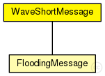

This documentation is released under the Creative Commons license
This documentation is released under the Creative Commons license(no description)
The following diagram shows usage relationships between types. Unresolved types are missing from the diagram. Click here to see the full picture.
The following diagram shows inheritance relationships for this type. Unresolved types are missing from the diagram. Click here to see the full picture.
| Name | Type | Description |
|---|---|---|
| wsmVersion | int |
Version of the Wave Short Message |
| securityType | int |
Determine which security mechanism was used |
| channelNumber | int |
Channel Number on which this packet was sent |
| dataRate | int |
Data rate with which this packet was sent |
| priority | int |
Power Level with which this packet was sent |
| psid | int |
Unique number to identify the service |
| psc | string |
Provider Service Context |
| wsmLength | int |
Length of Wave Short Message |
| wsmData | string |
Data of Wave Short Message |
| roadId | string |
Current ID of the road, e. g., 1ato2b |
| senderSpeed | double |
Speed of vehicle in the moment which send a message WSM, wsm->setSenderSpeed(traci->getSpeed()); |
| category | int |
Category of vehicle (1 to 10): 1 is bus, 2 is cab, ... need to complete |
| vehicleId | int |
vehicle ID (wsm->setVehicleId(traci->getId());) |
| senderAddress | int | |
| recipientAddress | int | |
| serial | int | |
| senderPos | Coord | |
| timestamp | simtime_t |
packet WaveShortMessage { //Version of the Wave Short Message int wsmVersion = 0; //Determine which security mechanism was used int securityType = 0; //Channel Number on which this packet was sent int channelNumber; //Data rate with which this packet was sent int dataRate = 1; //Power Level with which this packet was sent int priority = 3; //Unique number to identify the service int psid = 0; //Provider Service Context string psc = "Service with some Data"; //Length of Wave Short Message int wsmLength; //Data of Wave Short Message string wsmData = "Some Data"; // Adicionado (Minicurso_UFPI) - Send ID da pista e velocidade // Current ID of the road, e. g., 1ato2b string roadId = ""; // Speed of vehicle in the moment which send a message WSM, wsm->setSenderSpeed(traci->getSpeed()); double senderSpeed = 0.0; // // Category of vehicle (1 to 10): 1 is bus, 2 is cab, ... need to complete int category = 0; // vehicle ID (wsm->setVehicleId(traci->getId());) int vehicleId; // Path history of the vehicle, calculated from time to time //string pathHistory; // Radius of Gyration of the vehicle, calculated from time to time. // The vehicle send yours Radius of Gyration to another vehicles //double radius_of_Gyration; int senderAddress = 0; int recipientAddress = -1; int serial = 0; Coord senderPos; simtime_t timestamp = 0; }
This documentation is released under the Creative Commons license